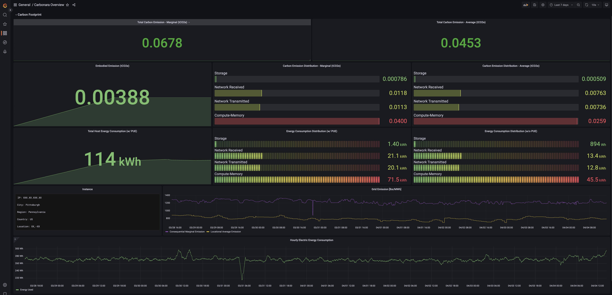

Installing Trycarbonara on Linux Box
Welcome! This guide will walk you through installing Trycarbonara into your bare-metal machine. Currently, Trycarbonara supports Linux as the initial OS offering for on-prem machines. Trycarbonara uses a combination of 2 methodologies to provide the most accurate energy consumption and carbon emission scores.
Trycarbonara uses tooling to fetch accurate host level power consumption metrics on bare-metal machines specifically for compute/memory resources, which is where IPMI helps. We use RAPL to provide process level granularity for the same, that is optional.
Trycarbonara uses cloud carbon footprint for storage and network utilization, which requires node_exporter to provide the required metrics. Again process_exporter helps provide process level granularity for more operational purpose, which is optional.
In order to register your node with Trycarbonara and ensure that the required tooling is configured, please follow the below instructions.
Note:
Please use
sudoto run all the commandsUsers are encouraged to leverage
systemdfor managing the binaries (exporter) for better reliability. Please let us know if need further assitance for the sameFor docker based installs, please refer -
Docker (Engine) installed
echo "Installing Docker Enginer ..."
sudo apt install -y docker.io
Step 1: Install IPMI exporter tool, for host CPU power consumption data
IPMI Exporter is supported by prometheus community, and provides different mediums to install and setup on the host machine. The exporter relies on tools from the FreeIPMI suite for the actual IPMI implementation. The FreeIPMI tooling suite can be installed using:
# FreeIPMI
sudo apt-get update && sudo apt-get install freeipmi-tools -y --no-install-recommends && sudo rm -rf /var/lib/apt/lists/*
The actual exporter can further be configured either using docker or binary. Here are the steps for binary installation:
# IPMI Exporter
wget https://github.com/prometheus-community/ipmi_exporter/releases/download/v1.6.1/ipmi_exporter-1.6.1.linux-amd64.tar.gz
tar xfvz ipmi_exporter-1.6.1.linux-amd64.tar.gz
rm ipmi_exporter-1.6.1.linux-amd64.tar.gz
./ipmi_exporter-1.6.1.linux-amd64/ipmi_exporter --config.file=ipmi_local.yml &
# Please use the shared ipmi config file: https://raw.githubusercontent.com/Trycarbonara/NodeInstallation/main/ipmi_local.yml, let us know if there is a conflict with any existing configuration on the host.
For more details, please refer: https://github.com/prometheus-community/ipmi_exporter
and/or
Step 1+: Install DCGM exporter tool, for host GPU (Nvidia) power consumption data
DCGM-Exporter is a tool based on the Go APIs to NVIDIA DCGM that allows users to gather GPU metrics and understand workload behavior or monitor GPUs in clusters. dcgm-exporter is written in Go and exposes GPU metrics at an HTTP endpoint (/metrics) for monitoring solutions such as Prometheus.
# Confirm that the VGA is Nvidia Controller using this command
lspci | grep -E 'VGA|Display ' | cut -d" " -f 1 | xargs -i lspci -v -s {}
# Make sure appropriate drivers are configured
sudo apt-get update && sudo apt-get install -y ubuntu-drivers-common && sudo ubuntu-drivers devices
# Either you choose to install the recommended driver, for ex:
sudo apt-get install -y nvidia-driver-530
# or you can auto-install latest version of nvidia driver
sudo apt -y upgrade && sudo ubuntu-drivers autoinstall
# Reboot to apply
sudo reboot
# Install Nvidia Data Center GPU Manager (DCGM)
# Note, to remove the outdated signing key:
sudo apt-key del 7fa2af80
# First we must set up the CUDA repository GPG key. For example, on Ubuntu 20.04 and a x86_64 architecture we run:
wget https://developer.download.nvidia.com/compute/cuda/repos/ubuntu2004/x86_64/cuda-keyring_1.0-1_all.deb
sudo dpkg -i cuda-keyring_1.0-1_all.deb
sudo add-apt-repository "deb https://developer.download.nvidia.com/compute/cuda/repos/ubuntu2004/x86_64/ /"
# Refer: https://developer.nvidia.com/blog/updating-the-cuda-linux-gpg-repository-key/ for other supported architecture and OS types
# If an error message is issued by previous command reporting that NO_PUBKEY A4B469963BF863CC is available, install that key:
sudo apt-key adv --keyserver hkp://keyserver.ubuntu.com:80 --recv-keys A4B469963BF863C
# Now we can install DCGM:
sudo apt update && sudo apt install -y datacenter-gpu-manager
# Reboot to apply
sudo reboot
# Enable the automatic start of DCGM service after the system boots:
sudo systemctl enable nvidia-dcgm
sudo systemctl start nvidia-dcgm
# The installation can be checked with the dcgmiutility:
sudo nv-hostengine
dcgmi discovery -l
# Output should look like:
1 GPU found.
+--------+--------------------------------------------------------+
| GPU ID | Device Information |
+--------+--------------------------------------------------------+
| 0 | Name: NVIDIA GeForce RTX YYYY |
| | PCI Bus ID: 00000000:01:00.0 |
| | Device UUID: GPU-xxxxxxxx-yyyy-dddd-nnnn-zzzzzzzzzzzz |
+--------+--------------------------------------------------------+
The actual exporter can further be configured either using docker or binary. Here are the steps for binary installation:
# Note: We already have a compiled binary available, for linux-amd64 arch
sudo curl -fsSL https://raw.githubusercontent.com/TryCarbonara/NodeInstallation/main/client/dcgm-exporter/dcgm-exporter -o /usr/bin/dcgm-exporter && sudo chmod 755 /usr/bin/dcgm-exporter
# or
# Compile and install the DCGM exporter for Prometheus
# DCGM exporter exposes GPU metrics to prometheus, leveraging Nvidia DCGM. If the Go compiler is not installed, we must install it first:
wget https://go.dev/dl/go1.18.2.linux-amd64.tar.gz
export PATH=$PATH:/usr/local/go/bin
sudo tar -C /usr/local -xzf go1.18.2.linux-amd64.tar.gz
sudo apt install -y make
go version
# Clone dcgm-exporter github repository and compile the code:
git clone https://github.com/NVIDIA/dcgm-exporter.git
cd dcgm-exporter
make binary
sudo PATH=$PATH make install
sudo chmod 755 /usr/bin/dcgm-exporter
# To monitor all GPUs run:
sudo dcgm-exporter &
# DCGM tool using docker
DCGM_EXPORTER_VERSION=2.1.4-2.3.1 && \
docker run -d --rm \
--gpus all \
--net host \
--cap-add SYS_ADMIN \
nvcr.io/nvidia/k8s/dcgm-exporter:${DCGM_EXPORTER_VERSION}-ubuntu20.04 \
-f /etc/dcgm-exporter/dcp-metrics-included.csv
For more details or installation options, please refer: https://github.com/NVIDIA/dcgm-exporter
Step 1+: Install NVIDIA GPU exporter tool, for host GPU (Nvidia) power consumption data
Nvidia GPU exporter for prometheus, using nvidia-smi binary to gather metrics.
# Confirm that the VGA is Nvidia Controller using this command
lspci | grep -E 'VGA|Display ' | cut -d" " -f 1 | xargs -i lspci -v -s {}
# Make sure appropriate drivers are configured
sudo apt-get update && sudo apt-get install -y ubuntu-drivers-common && sudo ubuntu-drivers devices
# Either you choose to install the recommended driver, for ex:
sudo apt-get install -y nvidia-driver-530
# or you can auto-install latest version of nvidia driver
sudo apt -y upgrade && sudo ubuntu-drivers autoinstall
# Reboot to apply
sudo reboot
# Install GPU exporter
VERSION=1.1.0
sudo wget https://github.com/utkuozdemir/nvidia_gpu_exporter/releases/download/v${VERSION}/nvidia_gpu_exporter_${VERSION}_linux_x86_64.tar.gz
sudo tar -xvzf nvidia_gpu_exporter_${VERSION}_linux_x86_64.tar.gz
sudo mv nvidia_gpu_exporter /usr/bin
# nvidia_gpu_exporter --help
sudo cp client/smi-gpu-exporter/nvidia_gpu_exporter.service /etc/systemd/system/nvidia_gpu_exporter.service
sudo systemctl daemon-reload \
&& sudo systemctl enable --now nvidia_gpu_exporter \
&& sudo systemctl restart nvidia_gpu_exporter
Refer: https://github.com/utkuozdemir/nvidia_gpu_exporter
Step 2: Install node exporter tool, for host resource usage data
Prometheus exporter for hardware and OS metrics exposed by *NIX kernels, written in Go with pluggable metric collectors.
# Configuring node_exporter to run using docker
docker run -d \
--net="host" \
--pid="host" \
-v "/:/host:ro,rslave" \
quay.io/prometheus/node-exporter:latest \
--path.rootfs=/host --collector.processes \
--collector.systemd --collector.tcpstat --collector.cpu.info \
--collector.diskstats.ignored-devices="^(ram|loop|fd)\\\\d+$"
# We recommend the above collectors configuration to get a complete coverage, please let us know if there is a conflict with any existing configuration on the host.
# Configuring node_exporter to run using tarball
wget https://github.com/prometheus/node_exporter/releases/download/v*/node_exporter-*.*-amd64.tar.gz
tar xvfz node_exporter-*.*-amd64.tar.gz
cd node_exporter-*.*-amd64
./node_exporter --collector.processes --collector.systemd --collector.tcpstat --collector.cpu.info --collector.diskstats.ignored-devices="^(ram|loop|fd)\\\\d+$" &
node_exporter can also be configured using direct binary or ansible For more details, please refer: https://github.com/prometheus/node_exporter
The below 2 steps are OPTIONAL but RECOMMENDED for process level granularity
Step 3: Install hubblo/scaphendre tool, for process level power consumption data using RAPL sensor
Scaphandre is a monitoring agent, dedicated to energy consumption metrics.
Depending on your kernel version, you could need to modprobe the module intel_rapl or intel_rapl_common first:
modprobe intel_rapl_common # or intel_rapl for kernels < 5
# To quickly run scaphandre in your terminal you may use docker:
docker run -d -v /sys/class/powercap:/sys/class/powercap -v /proc:/proc -p 8080:8080 -ti hubblo/scaphandre prometheus
# for using downloaded binary (https://hubblo-org.github.io/scaphandre-documentation/tutorials/getting_started.html):
scaphandre stdout -t 15
Note:
RAPL does support latest AMD Architectures. Also, With the Zen architecture, AMD replaced APM (Application Power Management) with RAPL (Running Average Power Limit). Source: https://arxiv.org/pdf/2108.00808.pdf, https://developer.amd.com/wp-content/resources/55803_B0_PUB_0_91.pdf
RAPL has certain requirements to be supported on AMD, like Ubuntu 22.04 or higher or kernel > 5.11
For more details, please refer: https://github.com/hubblo-org/scaphandre
Step 4: Install process exporter tool, for process level resource usage data
Prometheus exporter that mines /proc to report on selected processes.
# Configuring process_exporter to run
docker run -d --rm -p 9256:9256 --privileged -v /proc:/host/proc -v `pwd`/config:/config ncabatoff/process-exporter --procfs /host/proc -config.path /config/process.yml
# Prior to running this command, a dir /config with a config file `process.yml` is expected to exist
# Please use the shared process-exporter config file: https://raw.githubusercontent.com/Trycarbonara/NodeInstallation/main/process.yml, let us know if there is a conflict with any existing configuration on the host.
For more details, please refer: https://github.com/ncabatoff/process-exporter
Step 5: Validate the generated metrics
Once the above tooling is configured successfully, please REBOOT the machine for system changes to apply, using
sudo reboot
Post reboot, please validate the generated metrics on configured ports.
IPMI-exporter: Validate using
curl -v localhost:9290/metricsor any other assigned portDCGM-exporter: Validate using
curl -v localhost:9400/metricsor any other assigned portsmi-exporter: Validate using
curl -v localhost:9835/metricsor any other assigned portnode-exporter: Validate using
curl -v localhost:9100/metricsor any other assigned portrapl-exporter: Validate using
curl -v localhost:8080/metricsor any other assigned portprocess-exporter: Validate using
curl -v localhost:9256/metricsor any other assigned port
Post Installation
Trycarbonara provides managed monitoring service to help compute/visualize the energy and carbon vectors. Similar to OpenTelemetry, Trycarbonara’s monitoring service suports different approaches for providing a best and secure way into production:
Pull-based approach
This approach requires accessible endpoint to scrape the required metrics
Our monitoring service uses SSL/TLS encryption for secure connection and data transfer
In case of secure network, monitoring service endpoint (ingress) would need to be whitelisted
Push-based approach
This approach leverages Grafana Agent (see Appendix) to scrape the metrics locally and push to our monitoring service
Trycarbonara Client Agent uses TLS Certification and other forms of authentication/authorization for server validation
In case of secure network, monitoring service endpoint (egress) would need to be whitelisted
Centralized Monitoring Approach
Trycarbonara can be integrated with your existing centralized monitoring service, if any
This approach leverages Trycarbonara Server Agent (installed only on the central monitor server) to publish raw metrics to Trycarbonara SaaS, receive the computed data and publish it back to your server
Please reach out to us for more details
API based integration
This approach would enable direct API usage for your use case
Please reach out to us for more details
Once all the above ports are verified and the approach is identified, in case of a pull based approach, here is some information you need to provide to register your node with Trycarbonara service:
Node IP Address. Publically accessible endpoint
Architecture; eg: amd64
Instance Type, if any; eg: medium.x86. or any other label/tag. You can leave it blank if no type defined
Trycarbonara provides access to visualization, as separate user accounts, for every customer.
Sample Dashboard: 
Please feel free to reach out to the team on hello@trycarbonara.com or using other preferrable communication means for any support required in configuring and registering your node
Appendix
Install Grafana Agent, for enabling metrics push
Grafana Agent collects and forwards telemetry data to open source deployments of the Grafana Stack, Grafana Cloud, or Grafana Enterprise, where your data can then be analyzed. You can install Grafana Agent on Kubernetes and Docker, or as a system process for Linux, macOS, and Windows machines.
Grafana Agent is open source and its source code is available on GitHub at https://github.com/grafana/agent.
# Configuring node_exporter to run using docker
## 1. Copy and paste the following commands into your command line.
docker run -d \
-v /tmp/agent:/etc/agent/data \
--network="host" --privileged \
--env INSTANCE=$(hostname -I | cut -f1 -d' ') \
-v /path/to/config.yaml:/etc/agent/agent.yaml:ro \
grafana/agent:v0.32.1 -config.expand-env \
-config.file /etc/agent/agent.yaml
## 2. Replace /tmp/agent with the folder you want to store WAL data in.
WAL data is where metrics are stored before they are sent to Prometheus. Old WAL data is cleaned up every hour and is used for recovery if the process happens to crash.
## 3. Replace /path/to/config.yaml with a path pointing to a valid configuration file.
Please use the shared agent config file: https://raw.githubusercontent.com/Trycarbonara/NodeInstallation/main/demo/agent-config.yaml, let us know if there is a conflict with any existing configuration on the host.
Modify the configuration, according to the assigned ports and shared Trycarbonara monitoring server endpoint.
Note that using paths on your host machine must be exposed to the Docker container through a bind mount for the flags to work properly.
## 4. The remote endpoint/port along with the auth username and password must be applied to the above command as env variables:
--env AUTH-UNAME=<username> \
--env AUTH-PWD=<password> \
--env REMOTE-ENDPOINT=<trycarbonara-service-endpoint> \
--env REMOTE-PORT=<trycarbonara-service-port>
--env INSTANCE=<label-instance> # curl -s ifconfig.me || hostname -I | cut -f1 -d' '
--env HOSTNAME=<label-hostname> # hostname
--env IPMI_PORT=<assigned-ipmi-exporter-port>
--env NODE_PORT=<assigned-node-exporter-port>
--env DCGM_PORT=<assigned-dcgm-exporter-port> # when using DCGM exporter
--env SMI_PORT=<assigned-smi-exporter-port> # when using SMI exporter
For more details, please refer: https://grafana.com/docs/agent/latest/set-up/install-agent-docker/
For installing grafana agent directly on your linux box, please refer: https://grafana.com/docs/agent/latest/set-up/install-agent-linux/, https://grafana.com/docs/grafana-cloud/infrastructure-as-code/ansible/ansible-grafana-agent-linux/